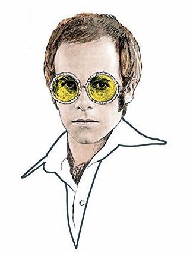
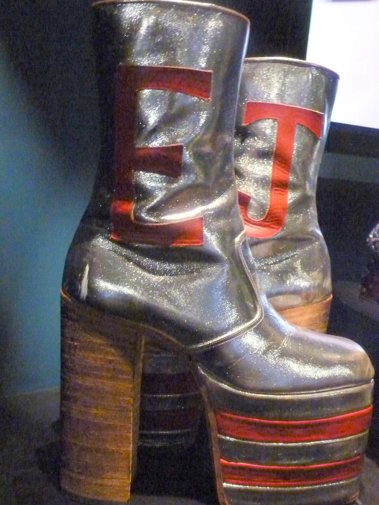
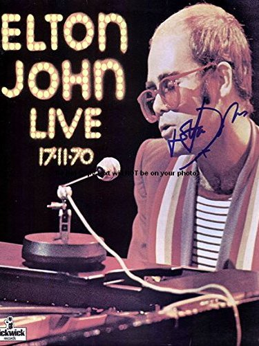

There are many reasons why Elton John was an obvious inclusion in this website on educating 'newbies' on the oldies. One of the more obvious is his success: he still holds the record for top selling single with Candle in the Wind 1997. He has 11 Grammy Nominations to his name and is in the Grammy Hall of Fame. Why is he so successful though?
Elton John is one of the most inspirational of the greats in my opinion. He uses his fame for good, for one thing: an ambassador for 23 different charities, including the $450 he has raised in the Elton John AIDS Foundation. He is a frontrunner for most inspiring in the 'be-yourself' category, as he is more than obviously unapologetically himself. Whether it be his absurd glasses, foot-tall heels, or bigger than life outfits, the Rocketman is far from conforming.
I remember reading an interview with Elton John once about why he dressed the way he did. Many thought it was him refusing to conform to the gender norms at the time, but he laughed that off. No, he was not trying to refuse gender norms. No, he was not doing it for attention. He dressed the way he did for one of the most human reasons possible: he was insecure. Many of the legends of his time were imfamous 'sex symbols', and John knew he did not look like them in the slightest. He was self-concious, comparing himself to Mick Jagger, Keith Richards, Elvis Presley, and the other greats of his time. That is one of the things I love about Elton John, he is so blatantly human, so relatable, even with the fame and fortune he has accomplished.